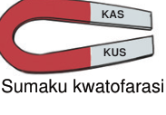

Sumaku inaweza kuonekana katika maumbo mbalimbali kulingana na matumizi yake. Mifano ya maumbo ya sumaku ni kama vile sumaku mche mstatili, sumaku kwatofarasi, sumaku U, sumaku duara na sumaku mche duara. Angalia au sikiliza maelezo ya Kielelezo namba 2. Kila umbo huathiri jinsi sumaku inavyounda eneo la usumaku. Pia, umbo la sumaku huathiri matumizi yake.

Sumaku kwatofarasi
Sumaku mche duara
Sumaku U
Sumaku mche mstatili
Sumaku duara
Kielelezo namba 2: Maumbo ya sumaku
Sifa za sumaku
Sumaku zina sifa mbalimbali muhimu ambazo huelezea tabia zake.Baadhi ya sifa hizo ni:
(a)
Sumaku huvuta vitu vyenye asili ya chuma.
(b)
Kani ya sumaku ni kubwa kwenye ncha za sumaku.
(c)
Sumaku mbili zikikaribiana, ncha zinazofanana hukwepana na ncha zisizofanana huvutana.